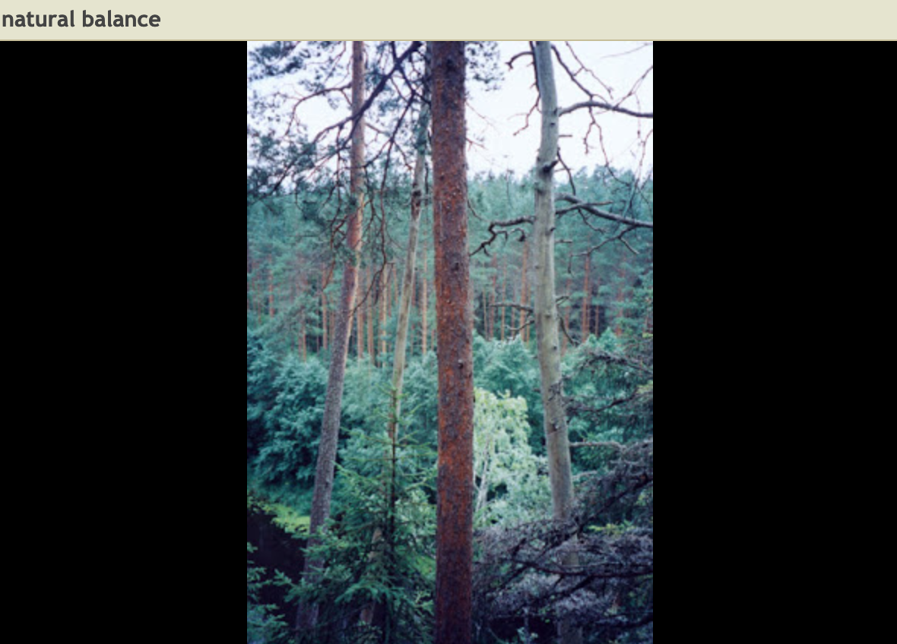
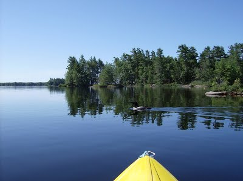

Picture Journal - "Natural Balance"
Nature in Latvia.
Natural Balance Album
A small sample of pictures from Latvia taken between 2001 and 2003. I noticed how seamlessly the Latvian people interacted with Nature, and therefore called this set, "Natural Balance". Although I have instinctively always been a nature person, it was not until I understood my Latvian heritage that I started to understand why I loved nature. With that also increased my ability to interact with Nature's loving strength, instead of being frightened by it.

Nature in the city, Toronto.
Nature Walk in Toronto (vlog 2010)
- Baby Geese Take First Trip (vlog 2010)
- Fuzzballs Breakfast (vlog 2010)
- Music Remix Experiments Inspired by the Fuzzballs (vlog 2010)
Nature in Kawartha Lakes, Ontario.
I've kayaked mega kilometers through Kawartha lakes. I use a small R5 kayak, which I can easily carry over small portages without any fancy gear. The lakes are links of small bays, with many rocks and obstacles. These bays house many birds and animals, which are all very friendly.
My motto, "Giving Nature right of way" is demonstrated in this picture, as I wait and enjoy as the loon passes in front on me.
Spring Kayaking
|

|
... Home ...
|